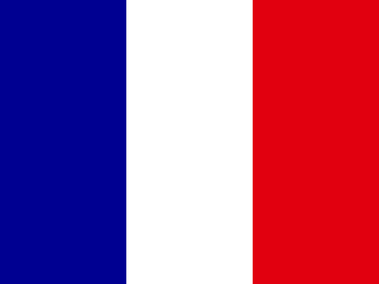

Saint Martin — PIL pro capite a parità di potere d’acquisto: andamentoPIL pro capite a parità di potere d’acquisto
Tabella dei dati
© 2026 Geostarna

Saint Martin — PIL pro capite a parità di potere d’acquisto: andamento© 2026 Geostarna